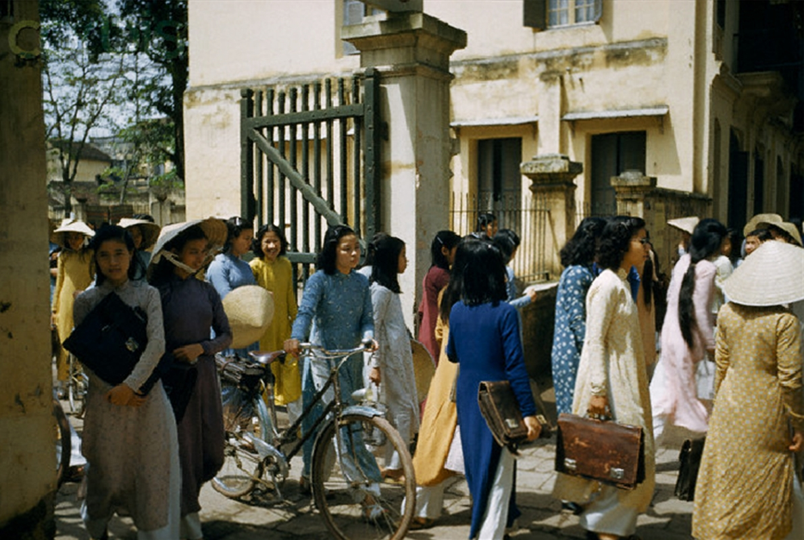

2cLĩnh vực tư tưởng, văn hoá, xã hội
Muốn cải tạo xã hội chủ nghĩa thì phải cải tạo chính mình
"Nếu không có tư tưởng xã hội chủ nghĩa thì không làm việc xã hội chủ nghĩa được"
Phải khắc phục
Kiến thức yếu kém - Chính trị bấp bênh - Kinh tế trì trệ - Văn hoá lạc hậu
=> dẫn tới thoái hoá cán bộ, đảng viên - "khe hở" để CNTB lợi dụng
Trước hết phải có học thức
Học văn hoá, chính trị, kỹ thuật
Nâng cao dân trí - Đào tạo và sử dụng nhân tài - Khẳng định vai trò to lớn của văn hoá

Bác Hồ với thiếu nhi

Học sinh Hà Nội, 1952
Kết luận
Xây dựng CNXH đòi hỏi năng lực lãnh đạo, nguyên tắc khoa học, hiểu quy luật khách quan và nghệ thuật khôn khéo, sát với thực tế.
Kinh tế
Nhiều thành phần - công nghiệp hoá - phân phối theo lao động
Chính trị
Giữ vững vai trò lãnh đạo của Đảng
Tư tưởng - văn hoá
Cải tạo chính mình - nâng cao dân trí
Sức mạnh quyết định: sự lãnh đạo của Đảng + khối đại đoàn kết toàn dân tộc
Xin cảm ơn!